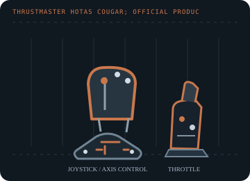

[ JOYSTICK CONTROLLERS // IDENTIFIED COMPONENT ]
Thrustmaster HOTAS Cougar
Two-unit PC HOTAS with metal flight-stick and throttle controls, a large programmable button/hat set and legacy scripting support.

MODEL IDENTIFICATION: Thrustmaster HOTAS Cougar; official product numbers include 2960534, 2969052 and 2970016 (regional packages). Published family information does not establish the revision or condition of an individual unit; compare its label and included parts with the linked documentation.
Model specifications
| Catalog subcategory | Joystick controllers |
|---|---|
| Exact model / identifier | Thrustmaster HOTAS Cougar; official product numbers include 2960534, 2969052 and 2970016 (regional packages). |
| Axes and buttons | Pitch/roll stick axes, a separately mapped rudder input and throttle axis, with trigger, multiple hats, switches and programmable buttons on the stick and throttle. Exact button numbering follows the supplied manual/profile. |
| Physical interface | Wired USB PC joystick/throttle set with a Windows control panel and Cougar Control Panel (CCP) programming tools. |
| Sensors and protocol | Analog axis positions and digital switch/hat states; Thrustmaster's cited support sheet does not identify the internal sensor technology. CCP can add software curves and assignments. |
| Power | USB-connected; no external power brick is listed on the manufacturer support page. Use the original cable and inspect the label before operation. |
| Host OS and driver compatibility | PC/Windows flight simulation. Thrustmaster's current support archive includes legacy Vista-era drivers and reference manuals; do not assume those drivers install on current Windows without testing. |
Setup and calibration
Install a matching driver only on a compatible host, connect USB, then use the Thrustmaster control panel/Windows game-controller test to verify centering, throttle range and hats. Apply CCP curves only after recording raw axis behavior.
Keep the operating-system baseline calibration and in-game sensitivity/dead-zone settings separate. Record the OS, driver, firmware and game used to test each axis and button.
Preservation and service notes
Check the metal gimbal for smooth return and inspect throttle rails, switches, USB lead and any aftermarket sensor/gimbal modifications. Keep any CCP scripts and calibrations with the specimen.
For an archive specimen, photograph the model label, note all included cables/adapters and distinguish directly observed behavior from published specifications.
References and support
- HOTAS Cougar support, manuals and drivers — ThrustmasterManufacturer product page with exact package numbers, manuals and legacy driver information.
- HOTAS Cougar user manual — ThrustmasterManufacturer's multilingual user manual.
Vendor support pages and manual downloads can change. Preserve the applicable manual and installer with a legacy host image, and verify the printed revision before service.